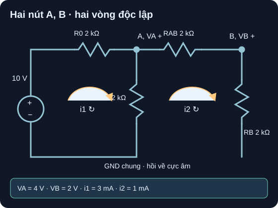

Phương Pháp Nút & Vòng
Một mạch, hai hệ phương trình, cùng một kết quả dòng và áp.
- Viết đủ hai phương trình KCL độc lập cho hai điện áp nút A, B; biểu diễn thành ma trận dẫn nạp.
- Đặt hai dòng vòng thuận chiều kim đồng hồ, lập KVL có nhánh chung và giải ra cùng dòng/áp như phương pháp nút.
- Kiểm KCL tại A/B, KVL từng vòng và tổng công suất nguồn/điện trở.
- Nhận biết khi nguồn áp giữa hai node cần supernode và nguồn dòng trên nhánh chung hai vòng cần supermesh.

i1−i2; kết quả âm sẽ chỉ chiều ngược. Mọi điện trở và nguồn là giá trị mô hình.Đọc mô tả A10-1
Nút GND 0 V là dây dưới, cực âm nguồn; cực dương nguồn S=10 V. R0=2 kΩ nối S–A, RA=2 kΩ nối A–GND, RAB=2 kΩ nối A–B, RB=2 kΩ nối B–GND. Dòng i1 thuận chiều kim đồng hồ qua nguồn, R0 rồi RA đi xuống; dòng i2 thuận chiều kim đồng hồ qua RAB, RB rồi RA đi lên. Dòng RA hướng xuống bằng i1−i2. Kết quả lý tưởng: VA=4 V, VB=2 V, i1=3 mA, i2=1 mA.
1. Hai điện áp nút là hai ẩn độc lập
Trước khi viết hệ, chọn GND=0 V, nguồn lý tưởng có S=+10 V; tất cả R=2 kΩ đúng danh định, dây lý tưởng. Tại A, dòng rời A qua R0 về S có thể âm, nhưng công thức (VA−10)/2 kΩ vẫn hợp lệ. Dòng rời A qua RA là VA/2 kΩ, qua RAB là (VA−VB)/2 kΩ. KCL là tổng dòng đại số rời nút bằng 0. Tại B, hai nhánh rời là RAB về A và RB về GND. MIT 6.002 Lecture 3, tr. 2–4, node method minh họa phương pháp dẫn nạp; OpenStax §10.3 là nguồn quy tắc KCL/KVL.
- Khử mẫu: nhân cả hai phương trình với
2 kΩ, nhận3VA−VB=10 Vvà−VA+2VB=0 V. Hệ số 3, −1, 2 không có đơn vị sau phép nhân; vế phải có đơn vị volt. - Giải: phương trình B cho
VA=2VB. Thay vào A:6VB−VB=10, vậyVB=2 V,VA=4 V. - Ma trận:
[3 −1; −1 2]·[VA;VB]=[10;0] V. Trước khi nhân với 2 kΩ, ma trận dẫn nạp vật lý là(1/2 kΩ)·[3 −1; −1 2]tính bằng siemens. - Dòng nhánh: nguồn qua R0 sang A
(10−4)/2 kΩ=3 mA; A xuống GND qua RA4/2 kΩ=2 mA; A→B(4−2)/2 kΩ=1 mA; B xuống GND2/2 kΩ=1 mA. KCL: A có3=2+1 mA, B có1=1 mA.
2. Giải lại bằng hai dòng vòng
Mạch phẳng có hai ô độc lập. Đặt i1 thuận chiều kim đồng hồ quanh ô trái: từ cực âm nguồn đi lên qua nguồn, qua R0 rồi xuống RA. Đặt i2 thuận chiều kim đồng hồ quanh ô phải: từ A qua RAB, xuống RB rồi lên RA. Trên RA, hai dòng vòng ngược chiều nên dòng thật A→GND là i1−i2. Không được cộng chúng. OpenStax §10.3, Fig. 10.23 và chiến lược chọn vòng độc lập.
- Vòng trái, KVL:
+10−(2 kΩ)i1−(2 kΩ)(i1−i2)=0. Khi i tính bằng mA, kΩ·mA=V, nên4i1−2i2=10. - Vòng phải, KVL:
−(2 kΩ)i2−(2 kΩ)i2−(2 kΩ)(i2−i1)=0, suy ra−2i1+6i2=0. Dấu của RA theo chiều đi lên được biểu diễn bằngi2−i1. - Giải hệ: từ vòng phải
i1=3i2. Thế vào vòng trái:12i2−2i2=10, đượci2=1 mA,i1=3 mA. - Quy đổi và đối chiếu:
IRA=i1−i2=2 mAđi xuống.VA=IRA·2 kΩ=4 V;VB=i2·2 kΩ=2 V;IR0=i1=3 mA,IRAB=i2=1 mA. Khớp nghiệm nút ở mục 1. - Năng lượng: nguồn cấp
10 V·3 mA=30 mW. R0 tiêu tán3²×2=18 mW; RA2²×2=8 mW; RAB/RB mỗi phần1²×2=2 mW. Tổng18+8+2+2=30 mW. Biểu thức mA²·kΩ cho đơn vị mW.
3. Khi nào cần supernode hoặc supermesh?
Nếu thay RAB bằng nguồn áp lý tưởng nằm giữa A và B, dòng qua nguồn không biểu diễn trực tiếp bằng (VA−VB)/R. Khoanh A và B thành một supernode, viết KCL qua các nhánh đi ra ngoài vùng đó, rồi thêm ràng buộc cực tính VA−VB=Vs nếu cực + của nguồn ở A. Không áp ngay hệ hai điện trở ở trên cho topology đã đổi. Nếu thay nhánh RA chung bằng nguồn dòng lý tưởng giữa hai ô, viết KVL vòng ngoài bao hai ô, rồi thêm ràng buộc có dấu i1−i2=Is khi mũi tên nguồn dòng hướng xuống A→GND; đó là supermesh. Đây là cách nhận diện và lập thêm ràng buộc, chưa giải một mạch supernode/supermesh cụ thể. MIT 6.002 Lecture 3 cung cấp bối cảnh phương pháp nút; ràng buộc ở đây suy từ chính dấu nguồn được mô tả.
4. Hoạt động tái lập: hai cách giải một netlist
Chép netlist bên dưới (node
0là GND). Đặt cột VA/VB trong bảng tính. Ghi hệ3VA−VB=10,−VA+2VB=0; khử thế hoặc dùng hàm giải ma trận của bảng tính. Kỳ vọngVA=4 V,VB=2 V.Trên sơ đồ, tô hai ô trái/phải và lập
4i1−2i2=10,−2i1+6i2=0với i tính bằng mA. Kỳ vọngi1=3 mA,i2=1 mA. Tính riêngi1−i2=2 mAqua RA; không lấy i2 làm dòng RA.Lập bảng bốn điện trở: dòng
3;2;1;1 mA, áp rơi6;4;2;2 V, công suất18;8;2;2 mWcho R0, RA, RAB, RB. Residual KCL tại A/B và hai KVL phải bằng 0; tổng R=30 mW bằng nguồn cấp.Có thể dùng tính toán số ma trận để đối chiếu, nhưng phải lưu hệ và bảng số. Nếu chạy SPICE về sau, lưu netlist, phiên bản, lệnh
.opvà output; bài này chưa công bố kết quả mô phỏng hay phép đo.
* Mô hình DC lý tưởng A10
V1 S 0 DC 10
R0 S A 2k
RA A 0 2k
RAB A B 2k
RB B 0 2k
.op
.end| Nhánh | Chiều dòng đối chiếu | I kỳ vọng | V rơi | P |
|---|---|---|---|---|
| R0 | S→A | 3 mA | 6 V | 18 mW |
| RA | A→GND | 2 mA | 4 V | 8 mW |
| RAB | A→B | 1 mA | 2 V | 2 mW |
| RB | B→GND | 1 mA | 2 V | 2 mW |
Các điện trở đúng 2 kΩ, nguồn đúng 10 V và dây không tổn hao là giả định bài toán. Nghiệm không chứng minh điện trở chịu công suất/nhiệt, nguồn có giới hạn dòng thích hợp hay mạch đã được lắp. Nếu khảo sát phần cứng, phải chọn part, tính worst-case dung sai/công suất, giới hạn dòng nguồn và có người duyệt.
Giữ nguồn 10 V, R0=RAB=RB=2 kΩ; chỉ RA từ A về GND còn 1 kΩ. Tìm VA, VB bằng hệ nút; tìm i1, i2 bằng hai vòng. Kiểm KCL tại A và tổng công suất. Nêu giới hạn mô hình.
- Sơ đồ và giả định, 1 điểm: chỉ RA thay đổi, nguồn/dây/R lý tưởng; nguồn S=10 V, GND=0 V. Hệ nút:
(VA−10)/2+VA/1+(VA−VB)/2=0,(VB−VA)/2+VB/2=0khi kΩ và mA, tức4VA−VB=10,−VA+2VB=0. - Giải có đơn vị, 1 điểm:
VA=20/7≈2,857 V,VB=10/7≈1,429 V.I0=(10−VA)/2 kΩ=25/7≈3,571 mA;IRA=VA/1 kΩ=20/7 mA;IAB=(VA−VB)/2 kΩ=5/7 mA; KCL25/7=20/7+5/7 mA. - Hai vòng, 1 điểm: KVL trái
10−2i1−1(i1−i2)=0→3i1−i2=10; phải−2i2−2i2−1(i2−i1)=0→−i1+5i2=0. Do đói1=25/7 mA,i2=5/7 mA,i1−i2=20/7 mA, khớp nút. - Công suất/giới hạn, 1 điểm: nguồn cấp
10·25/7=250/7≈35,714 mW. R0, RA, RAB, RB lần lượt1250/49,400/49,50/49,50/49 mW; tổng1750/49=250/7 mW. Cần part/dung sai/nhiệt trước lắp thật.